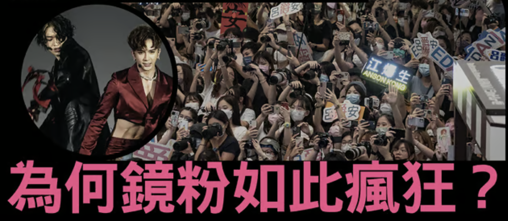

香港亞文化監察

香港偶像組合MIRROR的粉絲（鏡粉）近年來展現了對偶像追棒的驚人狂熱，其行為屢屢成為社會新聞熱話。這個現象在香港有史以來是絕無僅有的存在。
全方位佔據生活空間
最經典的莫過於粉絲對日常生活的全方位「入侵」，不少網民在群組內投訴家中牆紙、雪櫃甚至花園草地都被換上Mirror海報或刻上偶像的名字，有人更被迫與Mirror偶像的人形攬枕同床。
驚人的瘋狂應援
在公共空間，鏡粉的應援規模相當驚人。在偶像公開活動時，萬人空巷是為常態。經常有數百粉絲為爭取有利位置，不惜發生推撞甚至有人跌倒受傷的事件。
驚人的消費力
鏡粉也會自發將銅鑼灣、尖沙咀鬧市等地打造成應援聖地，在偶像生日月份集巨資買下大型廣告牌或免費電車，場面相當墟冚。這種狂熱更帶動了驚人的「偶像救市」經濟，有司機大讚粉絲是最大客戶，指她們為了參與應援活動，不惜一程車花費逾300港元車資。
攻擊性極強的保護偶像網絡行為
此外，部分忠實粉絲的排他性亦很強，不時在網上與批評者激烈爭辯，甚至與其他成員的粉絲因「爭寵」而鬧不和，保護偶像的態度相當強硬。
文章
>
研究調查
>